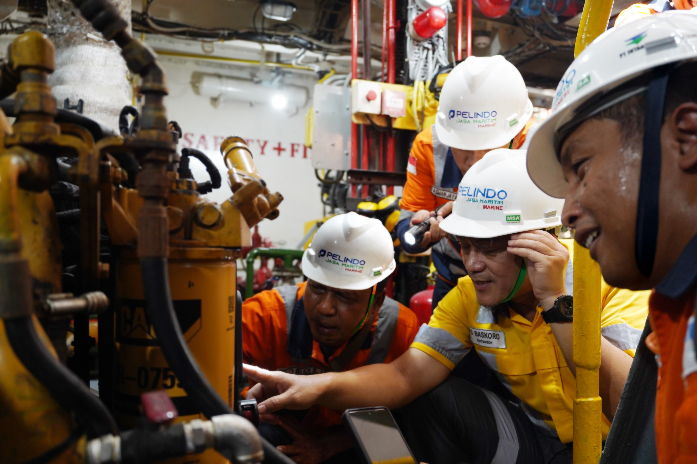

Pemeliharaan Peralatan
- Pemeliharaan peralatan pelabuhan
- Proyek Teknik dan konsultan
- Penyedia peralatan
- Manufaktur Peralatan Pelabuhan
- Pemeliharaan peralatan marine
- Kontraktor alat
- Penyedia operator alat
- Supplier spare part alat
Kami menyediakan layanan equipment yang terintegrasi untuk mendukung keandalan dan kelancaran operasional pelabuhan serta kegiatan maritim. Layanan mencakup pemeliharaan peralatan pelabuhan dan marine, penyediaan serta manufaktur peralatan, proyek teknik dan konsultansi, hingga penyediaan operator, kontraktor, dan spare part peralatan.
Didukung oleh tenaga ahli, kemampuan teknis, serta pengelolaan peralatan yang andal, kami berkomitmen memberikan solusi equipment yang aman, efisien, berkualitas, dan berkelanjutan untuk menunjang produktivitas serta menjaga kontinuitas operasional pelanggan.

Hak Cipta © PT Pelindo Jasa Maritim Makassar, Semua Hak Dilindungi.
Dirancang oleh HTML Codex didistribusikan oleh ThemeWagon